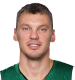
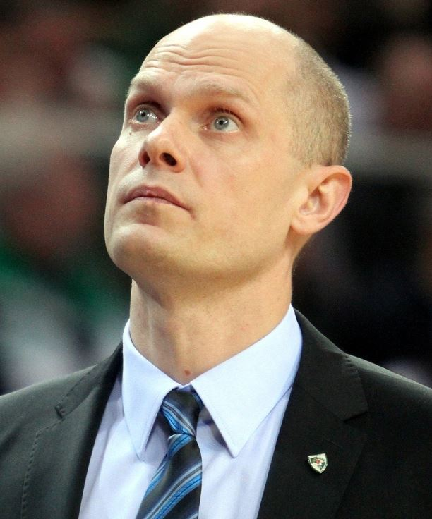
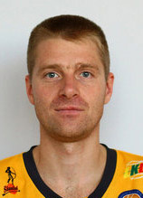

Svarbiausi Lietuvos nacionalinės vyrų krepšinio rinktinės laimėjimai.
Svarbiausi Lietuvos nacionalinės vyrų krepšinio rinktinės laimėjimai.
Olimpinės žaidynės 2000 m.
Antrosios Europos vyrų krepšinio pirmenybės vyko Latvijos sostinėjė Rygoje 1937 m. Krepšininkus ruošė žaidžiantysis treneris Feliksas Kriaučiūnas. 1937 metais Lietuvos vyrų rinktinė į Europos čempionatą Rygoje atvyko būdami autsaideriais. Tačiau tai nesutrukdė Lietuvos rinktinei pirmą kartą tapti Europos čempionais.

1974 m.

1978 m.

(vyr. treneris)
1954 m.

Šarūnas Jasikevičius
1976 m.
1976 m.

1978 m.

1971 m.

1969 m.

1975 m.

1971 m.

1973 m.

Saulius Štombergas
1973 m.
1973 m.

Mindaugas Žukauskas
1975 m.
1975 m.

1972 m.
dddkdkkkkkkkv kkkkkkkkkkkk kkkkkk kkkkfgf df fffffffffffffffffffffkkkkkkkkkk ooooooooooo oooooooooooo
Informacija ir vaizdo klipai
| 2000 m. Olimpinių žaidynių galutinė rikiuotė | |||
|---|---|---|---|
| Komanda | Vieta | Komanda | Vieta |
| JAV | 1 | Italija | 5 |
| Prancūzija | 2 | Jugoslavija | 6 |
| Lietuva | 3 | Kanada | 7 |
| Australija | 4 | Rusija | 8 |
| ... | 9-12 | ||